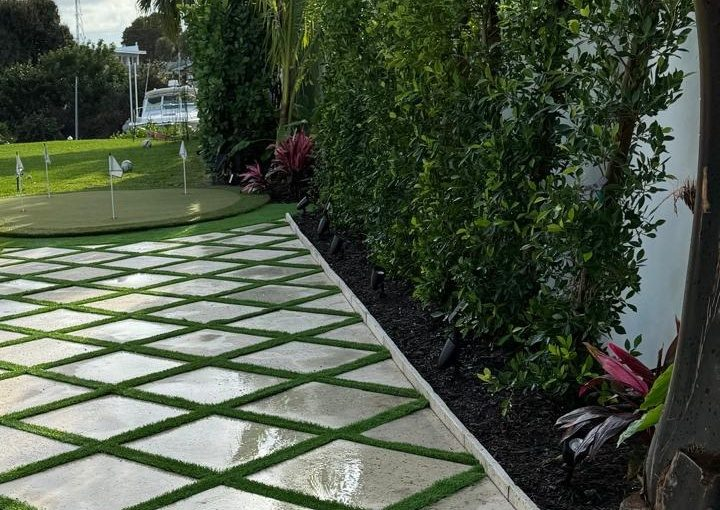
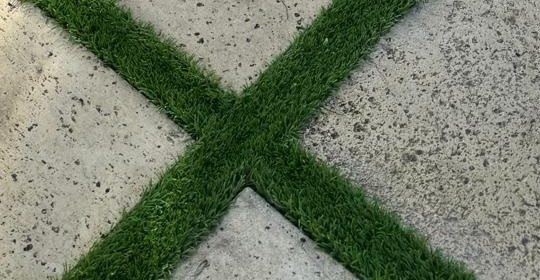

BWalkways with turf joints · own photo
Walkways with turf joints
Large pavers set apart with strips of artificial turf between them: a walkway that reads like a lawn from far away and walks like stone up close.
- Pavers set on the diagonal
- Turf joints between every paver
- Clean edges along planting beds